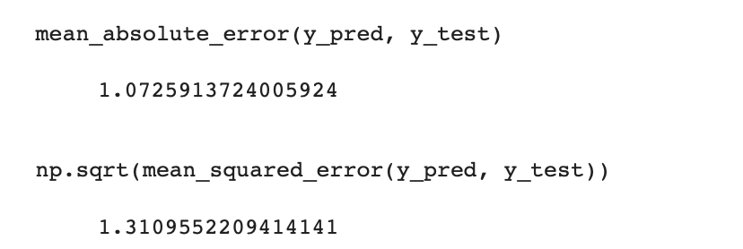

Car Price Prediction using Linear Regression and Lasso
Introduction
The Car Price Prediction project aims to develop a machine learning model that can accurately predict the price of cars based on various features and attributes. By utilizing the power of Linear Regression and Lasso regularization techniques, this project focuses on creating a reliable system for estimating car prices and assisting buyers and sellers in making informed decisions.
Data Description
The dataset you provided is the "Vehicle Dataset from CarDekho" available on Kaggle. This dataset contains information about used cars listed on the CarDekho platform. Here is a description of the columns in the dataset:
Car_Name: The name or model of the car.
Year: The year in which the car was manufactured.
Selling_Price: The selling price of the car (in lakhs).
Present_Price: The current showroom price of the car (in lakhs).
Kms_Driven: The distance traveled by the car in kilometers.
Fuel_Type: The type of fuel used by the car (Petrol, Diesel, or CNG).
Seller_Type: The type of seller (Individual or Dealer).
Transmission: The transmission type of the car (Manual or Automatic).
Owner: The number of previous owners of the car.
Mileage: The mileage offered by the car (in kilometers per liter).
Engine: The engine capacity of the car (in CC).
Power: The power of the car (in bhp).
Seats: The number of seats in the car.
Project Steps
Data Collection: Gather a comprehensive dataset containing information about various cars, including features such as make, model, year, mileage, fuel type, transmission, and more.
Exploratory Data Analysis (EDA): Perform data exploration and visualization to understand the distribution, relationships, and characteristics of the variables. Analyze numerical variables using histograms, scatter plots, and correlation matrices. Explore categorical variables using bar plots and frequency distributions.
Data Preprocessing: Handle missing values by either imputing them or removing the corresponding records, depending on the dataset and specific requirements. Convert categorical variables into numerical representations using techniques such as one-hot encoding or label encoding.
Split the dataset into features (X) and the target variable (y) to prepare for model training.
Feature Selection and Engineering: Perform feature selection to identify the most relevant variables for predicting car prices. Consider feature engineering techniques, such as creating new features based on domain knowledge or feature interactions, to enhance the predictive power of the model.
Model Training: Split the preprocessed data into training and testing sets. Train a Linear Regression model on the training data to learn the relationships between the features and car prices. Train a Lasso Regression model, which incorporates L1 regularization, to improve the model's performance and handle potential overfitting.
Model Evaluation: Evaluate the trained models using appropriate evaluation metrics, such as mean squared error (MSE), root mean squared error (RMSE), or R-squared. Compare the performance of the Linear Regression and Lasso models to assess their effectiveness in predicting car prices.
Predicting Car Prices: Utilize the trained models to predict car prices for new, unseen data. Assess the accuracy and reliability of the price predictions.

For the linear regression model, the mean absolute error (MAE) is calculated as 1.0726. This means that, on average, the predicted car prices deviate from the actual prices by approximately 1.0726 lakhs. The MAE measures the average absolute difference between the predicted and actual values, without considering the direction of the errors.
The root mean squared error (RMSE) is computed as 1.3110. This metric represents the square root of the average of the squared differences between the predicted and actual values. The RMSE provides a measure of the typical magnitude of the errors made by the model. In this case, the RMSE indicates that the predicted car prices, on average, deviate by approximately 1.3110 lakhs from the actual prices.
Both the MAE and RMSE are used to assess the accuracy and precision of the linear regression model's predictions. A lower MAE and RMSE indicate better performance, as they imply smaller differences between the predicted and actual values. However, the interpretation of these metrics depends on the specific context and the scale of the target variable.
For the Lasso regression model, the mean absolute error (MAE) is calculated as 1.0507. This means that, on average, the predicted car prices deviate from the actual prices by approximately 1.0507 lakhs. The MAE measures the average absolute difference between the predicted and actual values.
The root mean squared error (RMSE) is computed as 1.3032. This metric represents the square root of the average of the squared differences between the predicted and actual values. The RMSE provides a measure of the typical magnitude of the errors made by the model.
Comparing the MAE and RMSE for the linear regression model and the Lasso regression model, we can see that the Lasso model performs slightly better in terms of both metrics. The Lasso model has a lower MAE and RMSE compared to the linear regression model, indicating that it makes more accurate predictions with smaller deviations from the actual prices.
These metrics provide an assessment of the performance of the Lasso regression model in predicting car prices. A lower MAE and RMSE signify better accuracy and precision in the model's predictions. However, it is important to consider the context and scale of the target variable when interpreting these metrics.
Conclusions
In conclusion, I applied two regression models, Linear Regression and Lasso Regression, to predict car prices based on the given dataset. I evaluated the models' performance using two metrics: mean absolute error (MAE) and root mean squared error (RMSE).
For the Linear Regression model, I obtained an MAE of approximately 1.0726 lakhs and an RMSE of around 1.3110 lakhs. This suggests that, on average, my predicted car prices deviated from the actual prices by approximately 1.0726 and 1.3110 lakhs, respectively.
For the Lasso Regression model, I achieved a slightly improved performance with an MAE of approximately 1.0507 lakhs and an RMSE of around 1.3032 lakhs. These metrics indicate that the Lasso Regression model produced more accurate predictions with smaller deviations from the actual car prices compared to the Linear Regression model.
Based on these results, I can conclude that the Lasso Regression model outperformed the Linear Regression model in predicting car prices using the given dataset. The Lasso model demonstrated better accuracy and precision, as indicated by its lower MAE and RMSE values.
Overall, the regression models provide valuable insights into predicting car prices, and the Lasso Regression model can be considered as my preferable choice due to its improved performance in this specific analysis.